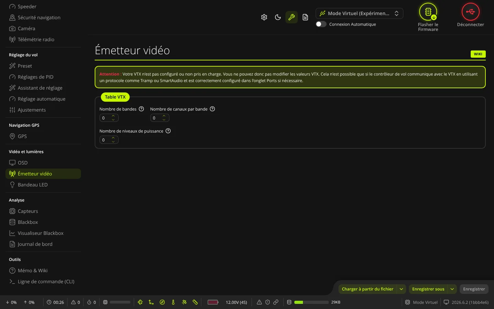
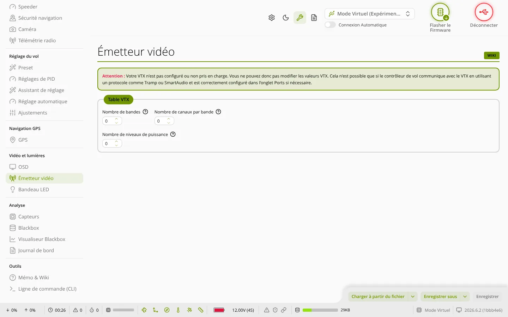

TRUE
TRUEÉmetteur vidéo
L'onglet Émetteur vidéo (groupe « Vidéo et lumières ») sert à régler l'émetteur vidéo (VTX) piloté par la carte : bande, canal ou fréquence, puissance, mode Pit, et la table VTX qui liste les fréquences et puissances autorisées.


Avant de commencer
- La carte doit dialoguer avec le VTX par un protocole comme SmartAudio, Tramp ou MSP. Pour SmartAudio et Tramp, réglez d'abord le port série du VTX dans l'onglet Ports.
- Sinon, l'onglet affiche « Votre VTX n'est pas configuré ou non pris en charge » et les réglages restent cachés.
- Si la carte gère une table VTX mais qu'elle est vide (0 bande, 0 canal ou 0 niveau de puissance), un message demande de la configurer et de l'enregistrer avant de choisir bande, canal et puissance.
Toutes les fréquences et puissances ne sont pas autorisées partout. Ne gardez dans la table que celles permises dans votre pays : mettez 0 sur une fréquence interdite pour la désactiver.
Choisir le mode
- Saisir la fréquence directement : remplace bande et canal par une fréquence, si le VTX le permet.
- Bande et Canal : choisis parmi ceux de la table VTX.
- Fréquence (mode fréquence directe) : en MHz.
- Puissance : niveau choisi parmi ceux de la table.
- Mode Pit : puissance très faible, pour laisser le drone allumé à l'atelier sans gêner les autres pilotes. Avec certains protocoles (SmartAudio), le mode Pit ne peut pas être activé par logiciel après la mise sous tension.
- Fréquence du mode Pit : fréquence utilisée en mode Pit, en MHz.
- Faible puissance d'émission lors du désarmement : Off, On (puissance la plus basse tant que le drone est désarmé, sauf en failsafe) ou On jusqu'au premier armement.
Valeur actuelle
Ce cadre résume ce que la carte connaît : Périphérique - Prêt (relu chaque seconde), Type VTX, Bande, Canal, Fréquence, Puissance, Mode Pit, Fréquence du mode Pit et Faible puissance d'émission lors du désarmement.
Table VTX
- Nombre de bandes et Nombre de canaux par bande : de 0 à 8 chacun.
- Tableau des bandes, une ligne par bande :
- Nom : nom de la bande (8 caractères au plus, en majuscules), par exemple RACEBAND ;
- Lettre : une seule lettre qui désigne la bande ;
- Usine (VTX SmartAudio seulement) : la carte envoie au VTX la bande et le canal, et le VTX utilise sa propre table ; les fréquences saisies ne servent alors qu'à l'affichage. Décoché : la carte envoie la fréquence saisie ;
- une case par canal : la fréquence en MHz (0 = canal désactivé).
- Nombre de niveaux de puissance : de 0 à 8.
- Tableau des puissances : pour chaque niveau, une Valeur (donnée par le fabricant du VTX, de 0 à 65535) et une Désignation (3 caractères au plus, par exemple 25, 200, MAX).
Charger la table de votre VTX
- Procurez-vous le fichier de table VTX (
.json) de votre modèle, par exemple auprès du fabricant, et vérifiez qu'il respecte les règles de votre pays. - Cliquez sur Charger à partir du fichier (ou, avec la flèche à côté, Charger depuis le presse-papiers). Le fichier est vérifié avant d'être lu.
- Un message rappelle que la table est chargée dans le logiciel mais pas encore dans la carte : relisez chaque valeur.
- Cliquez sur Enregistrer.
Boutons du bas
- Charger à partir du fichier / Charger depuis le presse-papiers : lit une table VTX au format JSON.
- Enregistrer sous : enregistre la table dans un fichier
.json. Avec la flèche, Sauvegarder Script Lua crée un fichier.luapour les scripts Lua de la radio ; il est nommé d'après l'identifiant unique de la carte. - Enregistrer : actif dès qu'une valeur a changé. Envoie les réglages et la table à la carte et les enregistre, sans redémarrage.